China Employee Termination 2026: Pulse Control-Signals Brief for Foreign Employers
Key takeaways
- China termination decisions are safer when managed through live control signals, not one-time approvals.
- The most important signals are route coherence, evidence integrity, communication discipline, and payroll/tax closure readiness.
- One red signal in a critical area should pause employee-facing action immediately.
- City-level interpretation should be tracked as a live operational signal in every case.
- This brief is impact-first for foreign operators; legal depth is secondary in the appendix.
What changed and why this matters now
Many foreign employers now run multiple China exits in parallel with compressed timelines. Under pressure, teams often confuse “document present” with “control healthy.” In practice, cases deteriorate when control signals drift: route logic starts to mismatch facts, chronology quality drops, manager statements deviate from approved language, or payroll closure gets delayed. A signal-led framework catches these changes earlier than static checklists.
This run uses a control-signals format to improve readability and operational actionability versus prior frameworks. The goal is simple: show what to watch now, what turns amber/red first, and what action to take before risk compounds.
Plain-language legal context first
China employer-initiated termination generally requires a lawful statutory basis and coherent evidence/process execution. Public anchors include the PRC Labor Contract Law framework, implementing regulation references (including Decree No. 535 context), and Supreme People’s Court labor-dispute interpretation materials. For non-local business leaders, the practical message is clear: business rationale alone is insufficient; defensibility depends on route quality plus execution integrity.
A signal model translates this legal reality into daily operations. If key signals degrade, pause and remediate before communication or settlement execution.
Pulse control signals dashboard
Signal 1: Route Coherence
What it measures: whether chosen route clearly matches fact pattern and local practice constraints.
Green: route memo specific, fallback route defined, city validation attached.
Amber: route assumptions not fully verified, open local interpretation question.
Red: route rationale inconsistent with facts or unresolved local conflict.
Immediate action: red = stop progression, re-open route gate.
Signal 2: Evidence Integrity
What it measures: whether chronology and source records are complete, consistent, and defensible.
Green: unified chronology ledger, source ownership clear, no major contradictions.
Amber: minor gaps, pending reconciliations, late documentation updates.
Red: material contradiction between records and narrative.
Immediate action: red = freeze communication prep and run contradiction remediation.
Signal 3: Communication Discipline
What it measures: whether employee-facing messaging is controlled and aligned with route/evidence.
Green: approved scripts, designated spokesperson, meeting protocol set.
Amber: script edits pending, manager briefing incomplete.
Red: ad hoc communication risk or known script drift.
Immediate action: red = remove unbriefed speaker, reschedule if needed.
Signal 4: Payroll/Tax Closure
What it measures: readiness of final pay, severance mapping, IIT/social treatment, and payment proof.
Green: calculations finalized and approved pre-meeting.
Amber: partial reconciliation completed, one element unresolved.
Red: unresolved payout logic or likely post-meeting correction.
Immediate action: red = no-go until payroll/tax sign-off complete.
Signal 5: Local Interpretation
What it measures: degree of confidence in city-level practical application.
Green: city memo confirms route viability and key implementation expectations.
Amber: local view is partial or under review.
Red: conflicting local advice unresolved.
Immediate action: red = escalate to localized review and hold case.
Signal 6: Archive Readiness
What it measures: whether case package is indexed and retrievable if challenged.
Green: closure index complete, evidence linked by case ID.
Amber: partial indexing; retrieval test not yet passed.
Red: fragmented storage or missing key linkage.
Immediate action: red = case cannot be formally closed.
Why this helps foreign employers
Foreign teams usually need rapid certainty: are we safe to proceed, and where is the weak point? A control-signal view answers this immediately without forcing executives to read full legal files. It also aligns functions: legal monitors route, HR manages communication, payroll owns closure, and leadership sees total readiness at a glance.
Practical scenarios
Scenario 1: Route green, payroll amber before meeting
A case appears near-ready, but payroll confirms IIT treatment review is incomplete.
Signal decision: hold communication until payroll signal returns green.
Scenario 2: Evidence red discovered late
Manager adds new comments that conflict with earlier records.
Signal decision: immediate hold, chronology reset, and contradiction memo before next step.
Scenario 3: Local signal turns red after advisor split
Two local advisors disagree on practical route defensibility in a specific city.
Signal decision: no-go until local interpretation is resolved and documented.
Role-owned SOP (signal operations)
Step 1 — Initialize case signal board
Owners: HRBP + Legal + Payroll lead
- Create six-signal board for each case.
- Assign primary and backup owners.
- Define review cadence and escalation SLAs.
Step 2 — Run daily signal checks
Owners: case manager + functional reps
- Update green/amber/red status.
- Attach evidence note for each change.
- Highlight new amber/red transitions.
Step 3 — Trigger mitigation workflows
Owners: functional owner of degraded signal
- Draft mitigation actions and deadlines.
- Escalate red signals to cross-functional panel.
- Preserve hold status where critical.
Step 4 — Pre-communication clearance
Owners: HR lead + Legal + Payroll
- Confirm critical signals are green.
- Confirm no unresolved red lines.
- Issue timestamped go/no-go memo.
Step 5 — Post-event close and learning
Owners: Compliance + records owner
- Validate archive readiness signal.
- Record signal drift history and outcomes.
- Feed recurring drift into process improvements.
Required document checklist
- Employee profile and contract context
- Route rationale memo with fallback
- City-level validation memo
- Chronology ledger with source ownership
- Script package and manager briefing records
- Payroll/severance/IIT/social worksheet
- Settlement and acknowledgment records
- Payment execution proof
- Signal-board history log
- Closure memo and archive index
Exception handling playbook
- New contradiction after approval: set evidence signal red, pause case, reopen gate.
- Manager unavailable for briefing: communication signal amber/red, appoint trained backup.
- Late payroll model change: payroll signal red, stop scheduling until recalibrated.
- Conflicting local interpretation: local signal red, escalate and document resolution.
- Repeated red in same function: launch systemic fix (training/template/workflow lock).
System implementation notes
- Add structured signal fields in HR workflow systems.
- Require evidence-linked justification for status transitions.
- Automate alerts for red transitions.
- Track KPIs: red-frequency, time-to-green, dispute incidence by signal pattern.
- Review quarterly to recalibrate thresholds and controls.
Common mistakes and prevention
- Mistake: treating signal board as reporting only.
Prevention: tie each red signal to mandatory hold/action rules.
- Mistake: reviewing signals weekly in active cases.
Prevention: daily refresh until closure.
- Mistake: decoupling legal and payroll signals.
Prevention: one integrated board with shared accountability.
- Mistake: skipping local interpretation signal.
Prevention: make city signal mandatory for every case.
- Mistake: no historical analysis.
Prevention: retain signal history and run recurrence reviews.
What to do now
- Launch a six-signal board across all active China termination cases.
- Set hard no-go rules for red route/evidence/payroll signals.
- Require evidence-backed status changes.
- Add mandatory city-level interpretation signal.
- Establish daily 15-minute cross-functional signal huddle.
- Train managers on communication-signal failure triggers.
- Automate controls for recurring red-signal patterns.
What to watch next
- City-level practical interpretation may continue to diverge by case type.
- Higher case volume can increase communication and payroll signal volatility.
- Practitioner updates may tighten practical expectations for evidence sufficiency.
FAQ
1) Why use signals instead of a single score?
Signals show where risk is changing in real time and support faster targeted intervention.
2) Can one red signal block progression?
Yes. Critical red signals should block employee-facing action until mitigated.
3) How often should we refresh signals?
Daily for active cases, and immediately after material events.
4) Who decides go/no-go?
Cross-functional decision by HR, legal, and payroll with explicit ownership.
5) Is local interpretation always needed?
Yes, because city-level practice can materially affect practical defensibility.
6) What is the biggest avoidable trigger?
Communicating while payroll or evidence signals remain red.
7) How do we improve over time?
Analyze recurring red-signal patterns and convert them into preventive workflow controls.
Legal depth appendix (secondary)
This brief is grounded in official/legal materials and practitioner analysis relevant to employer-side termination in China. Core legal anchors include the PRC Labor Contract Law framework, implementing regulation references associated with Decree No. 535 context, and Supreme People’s Court labor-dispute interpretation materials. Practitioner and payroll-context sources are used for practical interpretation for foreign employers. Residual uncertainty remains city-specific and fact-specific, so localized professional validation is recommended for live cases.
Disclaimer
This content is informational only and does not constitute legal, tax, or employment advice.
Sources
- National People’s Congress (Labor Contract Law, English text), accessed 2026-03-05: http://www.npc.gov.cn/zgrdw/englishnpc/Law/2007-12/13/content_1384064.htm
- State Council Gazette reference (implementing regulation / Decree No. 535 context), accessed 2026-03-05: https://www.gov.cn/gongbao/content/2008/content_1124615.htm
- Supreme People’s Court labor dispute interpretation update page, accessed 2026-03-05: https://www.court.gov.cn/fabu/xiangqing/243981.html
- China Briefing, Employee Termination in China, accessed 2026-03-05: https://www.china-briefing.com/news/employee-termination-in-china/
- ICLG Employment & Labour Laws and Regulations: China, accessed 2026-03-05: https://iclg.com/practice-areas/employment-and-labour-laws-and-regulations/china
- Littler ASAP analysis on China employment law developments, accessed 2026-03-05: https://www.littler.com/news-analysis/asap/key-recent-developments-chinas-employment-law-china-us-comparative-perspective
- PwC PRC Individual Income Tax summary, accessed 2026-03-05: https://taxsummaries.pwc.com/peoples-republic-of-china/individual/taxes-on-personal-income
Need local employment support in China?
If you need a compliance-first partner for hiring, payroll, and risk controls in China, China-Payroll.com can help evaluate the right setup.
Image Prompt Pack
Create a 16:9 hero image for article title: 'China Employee Termination 2026: Pulse Control-Signals Brief for Foreign Employers'. Scene: global operations team evaluating workforce model options for China market entry. Include motifs: decision matrix, org char…